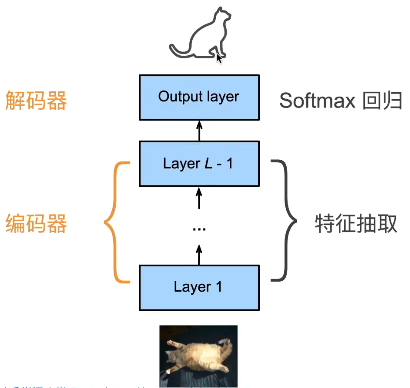
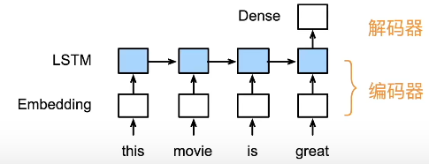
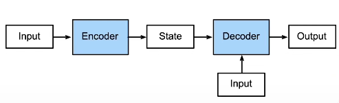

Pytorch深度学习-理论篇：编码器-解码器结构（Encoder-Decoder）
重新审视CNN与RNN
CNN
- CNN中前几层可以统一视为一个编码器，负责将原始图像转换成一个中间形式
- 最后的分类器可视为一个解码器，负责将中间形式转换为最终输出

RNN
- 编码器：将文本表示成向量
- 解码器：向量表示成输出

编码器-解码器架构
基本概念
- 一个模型被分为两块
- 编码器处理输入
- 解码器生成输出

我们可以将模型抽象成Encoder-Decoder架构。Encoder负责将输入转换为中间态，Decoder对中间态再进行处理，也可以额外再接受输入，然后转换为最终的输出。
优点
Encoder-Decoder模型的不同之处在于：
- Encoder将可变长度的输入序列编码成一个固定长度的向量
- Decoder将固定长度的向量解码成一个可变长度的输出序列
- Encoder-Decoder阶段的编码与解码的方式均可以是不同的网络架构
即，Encoder-Decoder模型允许我们：
- 更灵活的处理数据
- 更灵活的搭建网络
---------------------本文结束---------------------